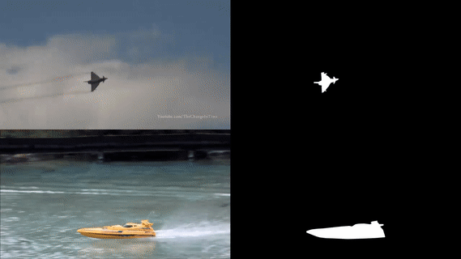

Last updated 20 Otc. 2026
NUS/BUAA-PRO: A Tracking Dataset with
Pixel-Level Annotation
|
NUS/BUAA-PRO is the abbreviation
for 'NUS/BUAA People and Rigid Objects Dataset', which contains
365 image sequences with manually labeled bounding boxes and
occlusion status. 150 sequences are further annotated with
pixel-level masks.
|
|  |
| Download NUS-PRO Data: Baidu, Google Drive (part 1, part 2), Mega View tool: Baidu, Google Drive, Mega Code used in the reference paper: Baidu, Google Drive, Mega BUAA-PRO Code & data package: Baidu (access code: b9qi), Dropbox (Original image data can be found in NUS-PRO) |
| Reference @article{nus_pro, title={{NUS-PRO: A New Visual Tracking Challenge}}, author={Li, A and Lin, M and Wu, Y and Yang, MH and Yan, S}, journal={ IEEE Transactions on Pattern Analysis and Machine Intelligence}, volume={38}, number={2}, pages={335--349}, year={2016} } @inproceedings{buaa_pro, title={{BUAA-PRO: A Tracking Dataset with Pixel-Level Annotation}}, author={Li, Annan and Chen, Zhiyuan and Wang, Yunhong}, booktitle={British Machine Vision Conference}, year={2018} } |